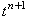
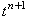

|
Рассмотрим метод решения уравнения (12.1), имеющий второй порядок точности.
Для этого разобьём пополам интервал между точками
 и  (см. рисунок).
Полученную промежуточную точку обозначим, как . Запишем явную разностную схему,
аппроксимирующую уравнение (12.1) на первом полушаге интервала
(т.е., на интервале ):
Следовательно, решение в точке можно найти с помощью рекуррентного соотношения:
Зная решение в точке ,
можно записать для уравнения (12.1) разностную схему, в которой производная по времени будет
аппроксимирована центральной конечной разностью:
где Видно, что правая часть разностной схемы (12.6)
аппроксимируется относительно точки . Следовательно, разностный оператор в левой части является
центральной конечной разностью, которая, как известно, имеет второй порядок аппроксимации. и  (см. рисунок).
Полученную промежуточную точку обозначим, как . Запишем явную разностную схему,
аппроксимирующую уравнение (12.1) на первом полушаге интервала
(т.е., на интервале ):
Следовательно, решение в точке можно найти с помощью рекуррентного соотношения:
Зная решение в точке ,
можно записать для уравнения (12.1) разностную схему, в которой производная по времени будет
аппроксимирована центральной конечной разностью:
где Видно, что правая часть разностной схемы (12.6)
аппроксимируется относительно точки . Следовательно, разностный оператор в левой части является
центральной конечной разностью, которая, как известно, имеет второй порядок аппроксимации.
Введём следующие обозначения:
С учётом рекуррентного соотношения (12.5) и обозначений (12.7) разностная схема (12.6) будет иметь вид:
Таким образом, решение на (n + 1)-ом шаге по времени можно найти с помощью рекуррентного соотношения:
Описанный метод решения обыкновенных дифференциальных уравнений первого порядка носит название
метода Рунге-Кутта 2-го порядка.
|